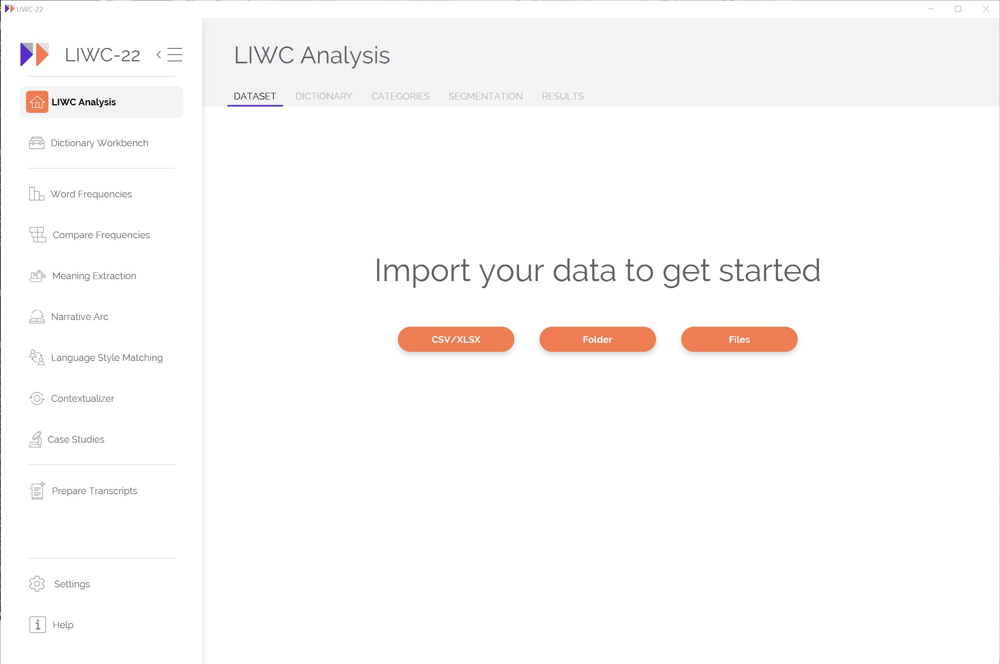
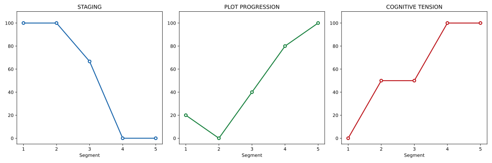

How to use
Initialization
Liwc is the main class for interacting with the LIWC CLI.
liwc = Liwc(liwc_cli_path='LIWC-22-cli', threads=None, verbose=True) Parameters: - liwc_cli_path (str): Path to the LIWC CLI executable. Default is ‘LIWC-22-cli’. On WSL, it is required to add .exe at the end ‘LIWC-22-cli.exe’, - threads (int, optional): Number of threads to use. Defaults to the number of CPU cores minus one. - verbose (bool, optional): If True, display printing such as progress bar for large files. Defaults to False.
The main Class ofPyliwc is Liwc.

Methods
LIWC analyze
analyze_df
Analyze text data from a Pandas DataFrame using LIWC.
from pyliwc import Liwc
liwc = Liwc('LIWC-22-cli.exe')
result_df = liwc.analyze_df(text_df, return_input=False, liwc_dict='LIWC22')Example
import pandas as pd
data = {'Text': ["I am happy", "I feel sad today"]}
df = pd.DataFrame(data)
result_df = liwc.analyze_df(df.Text)analyze_csv
Analyze text data from a CSV file using LIWC.
liwc.analyze_csv(input_file, output_location, row_id_indices, column_indices, liwc_dict='LIWC22')Example
liwc.analyze_csv("input.csv", "output.csv", "0", "1")analyze_folder
Analyze all text files in a specified folder using LIWC.
liwc.analyze_folder(input_folder, output_location, liwc_dict='LIWC22')Example
liwc.analyze_folder('D:/Downloads/texts_folder', 'D:/Downloads')analyze_string
Analyze a single string using LIWC.
liwc.analyze_string(input_string, output_location, liwc_dict='LIWC22')Example
liwc.analyze_string("I am feeling great", "D:/Downloads")analyze_string_to_json
Analyze a single string and return the result as a JSON object.
liwc.analyze_string_to_json(input_string, liwc_dict='LIWC22')Example
result = liwc.analyze_string_to_json("This is an example string")
print(result)
{'Segment': 1, 'WC': 5, 'Analytic': 39.7, 'Clout': 40.06, 'Authentic': 1, 'Tone': 20.23, 'WPS': 5, 'BigWords': 20, 'Dic': 60, 'Linguistic': 60, 'function': 60, 'pronoun': 20, 'ppron': 0, 'i': 0, 'we': 0, 'you': 0, 'shehe': 0, 'they': 0, 'ipron': 20, 'det': 40, 'article': 20, 'number': 0, 'prep': 0, 'auxverb': 20, 'adverb': 0, 'conj': 0, 'negate': 0, 'verb': 20, 'adj': 0, 'quantity': 0, 'Drives': 0, 'affiliation': 0, 'achieve': 0, 'power': 0, 'Cognition': 0, 'allnone': 0, 'cogproc': 0, 'insight': 0, 'cause': 0, 'discrep': 0, 'tentat': 0, 'certitude': 0, 'differ': 0, 'memory': 0, 'Affect': 0, 'tone_pos': 0, 'tone_neg': 0, 'emotion': 0, 'emo_pos': 0, 'emo_neg': 0, 'emo_anx': 0, 'emo_anger': 0, 'emo_sad': 0, 'swear': 0, 'Social': 0, 'socbehav': 0, 'prosocial': 0, 'polite': 0, 'conflict': 0, 'moral': 0, 'comm': 0, 'socrefs': 0, 'family': 0, 'friend': 0, 'female': 0, 'male': 0, 'Culture': 0, 'politic': 0, 'ethnicity': 0, 'tech': 0, 'Lifestyle': 0, 'leisure': 0, 'home': 0, 'work': 0, 'money': 0, 'relig': 0, 'Physical': 0, 'health': 0, 'illness': 0, 'wellness': 0, 'mental': 0, 'substances': 0, 'sexual': 0, 'food': 0, 'death': 0, 'need': 0, 'want': 0, 'acquire': 0, 'lack': 0, 'fulfill': 0, 'fatigue': 0, 'reward': 0, 'risk': 0, 'curiosity': 0, 'allure': 0, 'Perception': 0, 'attention': 0, 'motion': 0, 'space': 0, 'visual': 0, 'auditory': 0, 'feeling': 0, 'time': 0, 'focuspast': 0, 'focuspresent': 20, 'focusfuture': 0, 'Conversation': 0, 'netspeak': 0, 'assent': 0, 'nonflu': 0, 'filler': 0, 'AllPunc': 0, 'Period': 0, 'Comma': 0, 'QMark': 0, 'Exclam': 0, 'Apostro': 0, 'OtherP': 0, 'Emoji': 0}Language Style Matching
This method allows the analysis of linguistic style matching, focusing on person and group-level analysis.
analyze_lsm
Perform LSM analysis on a DataFrame.
liwc.analyze_lsm(df, calculate_lsm='person-and-group', group_column='GroupID', person_column='PersonID', text_column='Text', output_type='pairwise', expanded_output=False, omit_speakers_number_of_turns=0, omit_speakers_word_count=10, segmentation='none')Example
liwc = Liwc('LIWC-22-cli.exe')
import pandas as pd
# Example DataFrame
data = {
'GroupID': [1, 1, 2, 2],
'PersonID': [101, 102, 201, 202],
'Text': ["I like apples",
"He enjoys oranges",
"They eat bananas",
"We love grapes"]
}
df = pd.DataFrame(data)
lsm_result = liwc.analyze_lsm(df,
calculate_lsm="pairwise",
person_column='PersonID',
group_column='GroupID',
text_column='Text',
omit_speakers_word_count=1)# Group level
lsm_result['group_level']| GroupID | Segment | LSM | WC.Total | |
|---|---|---|---|---|
| 0 | 1 | 1 | 0.88 | 6 |
| 1 | 2 | 1 | 1.00 | 6 |
# Person level
lsm_result['person_level']| GroupID | Segment | Person.1 | Person.2 | LSM | WC.Person.1 | WC.Person.2 | |
|---|---|---|---|---|---|---|---|
| 0 | 1 | 1 | 101 | 102 | 0.88 | 3 | 3 |
| 1 | 2 | 1 | 201 | 202 | 1.00 | 3 | 3 |
Narrative arc
The Narrative Arc Analysis feature provides insights into the narrative structure of texts by breaking them down into key components such as Staging, Plot Progression, and Cognitive Tension. This is particularly useful for understanding the flow and development of stories or articles. Here’s a closer look at how it works:
How It Works
Text Segmentation:
The text is divided into multiple segments, and each segment is analyzed separately.
You can control the number of segments using the segments_number parameter.
Components Analysis:
- Staging: This measures how much information is being set up at various points in the text.
- Plot Progression: This reflects the movement and development of the narrative.
- Cognitive Tension: This captures the emotional or psychological tension present in the text.
Scaling Methods: Two scaling methods are available:
0-100: Values are scaled between 0 and 100 for easy comparison.Z-score: Standardizes scores based on mean and standard deviation.
Output Options:
- Choose whether to output individual data points for each segment or aggregate the data.
- Filter out texts with word counts below a specified threshold using skip_wc. Function Usage
Here is a breakdown of the narrative_arc function, which conducts the analysis:
narrative_arc
narrative_arc(
df=df,
column_names=['Text'],
output_individual_data_points=True,
scaling_method='0-100',
segments_number=5,
skip_wc=10
)Example
from pyliwc import Liwc
import pandas as pd
liwc = Liwc('LIWC-22-cli.exe')
df = pd.DataFrame({
'Text': ["""
Once upon a time, in a land far away, there lived a young prince named Elior who was born without the ability to speak. One day, a wise inventor arrived at the castle with an AI device that could translate thoughts into speech. The prince accepted the device and, to everyone's amazement, his unspoken words became a beautiful voice. The entire kingdom rejoiced as Elior expressed his wisdom and compassion. With the power of AI, he not only found his voice but also united his people. Thus, the prince and his kingdom thrived, forever grateful for the miracle of technology."""
]
})
narrative_results = liwc_analyzer.narrative_arc(
df=df,
column_names=['Text'],
output_individual_data_points=True,
scaling_method='0-100',
segments_number=5,
skip_wc=10
)
narrative_results| Row ID | WC | Narrativity_Overall | Narrativity_Staging | Narrativity_PlotProg | Narrativity_CogTension | |
|---|---|---|---|---|---|---|
| 0 | 1 | 100 | 47.6 | 81.09 | 16.17 | 45.54 |
liwc = Liwc('LIWC-22-cli.exe')
df = pd.DataFrame({
'Text': ["""
Once upon a time, in a land far away, there lived a young prince named Elior who was born without the ability to speak. One day, a wise inventor arrived at the castle with an AI device that could translate thoughts into speech. The prince accepted the device and, to everyone's amazement, his unspoken words became a beautiful voice. The entire kingdom rejoiced as Elior expressed his wisdom and compassion. With the power of AI, he not only found his voice but also united his people. Thus, the prince and his kingdom thrived, forever grateful for the miracle of technology."""
]
})
narrative_results = liwc.narrative_arc(
df=df,
column_names=['Text'],
output_individual_data_points=True,
scaling_method='0-100',
segments_number=5,
skip_wc=10
)Plotting the Narrative Arc
To visually represent the narrative arc, you can use the plot_narrative_arc method:
Note: output_individual_data_points must be set to True in narrative_arc to plot the results
from pyliwc import Liwc
import pandas as pd
liwc = Liwc('LIWC-22-cli.exe')
df = pd.DataFrame({
'Text': ["""
Once upon a time, in a land far away, there lived a young prince named Carlo who was born without the ability to speak.
One day, a wise inventor arrived at the castle with an AI device that could translate thoughts into speech.
The prince accepted the device and, to everyone's amazement, his unspoken words became a beautiful voice.
The entire kingdom rejoiced as Elior expressed his wisdom and compassion.
With the power of AI, he not only found his voice but also united his people.
Thus, the prince and his kingdom thrived, forever grateful for the miracle of technology."""
]
})
narrative_results = liwc.narrative_arc(
df=df,
column_names=['Text'],
output_individual_data_points=True,
scaling_method='0-100',
skip_wc=10
)
# Plot the Narrative Arc
fig = liwc.plot_narrative_arc(narrative_results)
fig